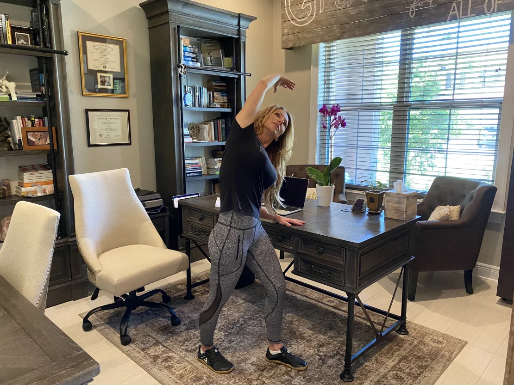

4 simple daily health resolutions that matter more than you think
(CNN) - Making New Year’s resolutions is easy. Keeping them is hard. Too often, we set resolutions to make sweeping, multistep changes that are well-intentioned but unrealistic.
One year, I resolved to prep our family meals for the week every Sunday. I bought containers to store each meal, created a menu and grocery list, went shopping, and then came home with all the food, only to realize I was completely unmotivated to give up my Sunday afternoon cooking a week’s worth of meals at once. Instead, I decided to make each meal as needed, as I always did.
Like many other people’s experiences, my lofty resolution failed before it even began.
It takes self-control and discipline to make and sustain changes to your existing habits and routine. When your resolution involves multiple steps, a significant time commitment or anything that doesn’t offer some sort of immediate gratification, it’s even harder to keep.

To help, I’m sharing four simple health resolutions that require limited daily effort while delivering far-reaching health benefits — as well as some form of immediate gratification.
These resolutions still demand daily consistency but only take single-step effort with minimal time commitment. Consider adding one or more of them to your 2024 healthy habits!
1. Floss your teeth daily
With only one-third of Americans flossing daily, you may be one of the majority who could benefit from adding this habit to your dental hygiene routine.
Too many people only floss when they eat popcorn or when they feel food stuck in their teeth, according to my dentist, Dr. Victoria Spindel Rubin. “In reality, food is always getting trapped between your teeth. … If you don’t floss, you miss cleaning 40% of each tooth,” Spindel Rubin said.
In addition to fighting gum disease, Spindel Rubin pointed out that flossing is linked to better heart health and improved diabetic control. But you only reap the benefits with the right technique.
Spindel Rubin said that proper flossing technique involves “wrapping string floss around your tooth and going up and down a few times to remove the plaque and biofilm.”
Don’t let a little blood stop you from flossing. It’s normal for your gums to bleed when you start but will abate as you continue to floss regularly, according to Spindel Rubin. “If the bleeding doesn’t stop … see your dentist to be evaluated for periodontal disease,” she added.
The process may sound involved, but flossing only takes a couple of extra minutes before bed. For those who brush every night but tend to skip flossing afterward, Spindel Rubin suggested flossing before brushing. It’s a habit stacking technique — performing the new activity just before the ingrained habit pairs them together in a way that makes maintaining the new habit easier.
Where’s the immediate gratification I mentioned? After flossing with proper technique, slide your tongue along your teeth and notice how much cleaner they feel compared with brushing alone. That’s something to smile about!
2. Stand and move your body once an hour
Do you have a sedentary job that leads to sitting during the bulk of your day? High amounts of sitting time are associated with increased risks of cancer, cardiovascular disease and all-cause mortality.
The good news is that a little effort to break up prolonged sitting with short bouts of standing and movement can make a big difference in your overall health. Standing and moving every hour for just five minutes is effective, according to a Columbia University study published in January that investigated the least amount of activity needed to counteract the negative health implications of excessive sitting. Even one minute of walking every hour improves health, as demonstrated by decreased blood pressure in the study participants.
To make it easier for you to remain consistent with your resolution to get up hourly, set an alarm on your phone or other devices.
In terms of immediate gratification, you’ll feel better mentally and physically when you stand and stretch after prolonged sitting, and adding just a little bit of cardiovascular activity can lift your mood.
3. Express gratitude daily
It takes just a bit of effort to find reasons to be grateful. And daily expressions of gratitude lead to many health and wellness benefits, including boosting happiness and lowering stress levels. Multiple studies during the height of the pandemic showed that practicing gratitude had the capacity to reduce stress and improve mood. Gratitude practices can also decrease depression and increase self-esteem.
So how does one go about practicing gratitude daily? It can be as simple as making a point to thank anyone you encounter who gives you their time and energy. For more consistency and routine, you can keep a gratitude journal and write three things in it every night that you were grateful for that day. For over a decade now, my husband and I have kept a gratitude whiteboard in our bathroom. Nightly, we each write three things on it that we were grateful for that day.
Recognizing that you have reasons to be grateful is immediately gratifying all on its own. All the health benefits are icing on the cake.
4. Cuddle with your pet more
Roughly 68% of US households have a pet, according to the National Institutes of Health. If you are a pet owner, you know the positive health effects they offer through companionship and emotional support. Dogs, in particular, can also promote an active lifestyle, and some even detect oncoming epileptic seizures and the presence of cancer in their human companions.
Beyond simply having your pet in your household, spending time physically interacting with it can reduce stress and anxiety. While stroking your pet, have you ever noticed an immediate sense of calm and contentment washing over you both?
In a small study of 242 college students, researchers found that the students showed greater positive impacts on stress levels, happiness and well-being when they touched dogs compared with when they only observed them, and the positive mental health outcomes increased with duration. Science confirms it: You should resolve to pet your dog more.
Barring any allergies or other issues, if you don’t have a pet, maybe now is the time to consider one. Shelters are full of dogs and cats eager to shower you with health benefits. That said, adding a pet to your household is a major, long-term emotional, physical and financial responsibility — not a simple New Year’s resolution.
As someone whose family includes five rescue dogs, I can attest to both the added responsibility and the enormous benefits. It’s not always easy, but it’s more than worth it for my household. Make sure it’s the right choice for you and your family before making the commitment.